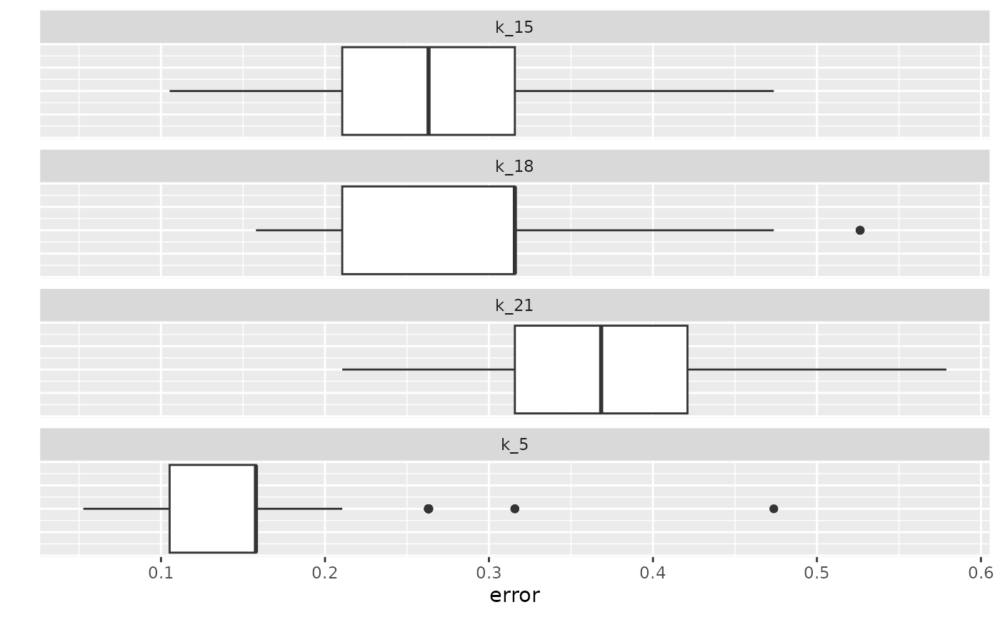

4 XGBoost classification
Source:vignettes/articles/4-XGBoost-classification.Rmd
4-XGBoost-classification.Rmd
library(rfintext)
library(rfinstats)
library(dplyr)
library(tidytext)
library(xgboost)
library(caret)
library(topicmodels)
library(quanteda)
library(doFuture)
library(forcats)
library(purrr)
plan(multisession)
y <- aspol |>
distinct(kunta) |>
left_join(taantuvat) |>
filter(!is.na(luokka)) |>
mutate(luokka = forcats::fct_collapse(luokka,
Kasvava = c("Voimakkaasti kasvava",
"Kasvava",
"Hieman kasvava"),
Taantuva = c("Hieman taantuva",
"Taantuva",
"Voimakkaasti taantuva")))
y
#> # A tibble: 66 × 5
#> kunta vaesto kokmuutos_2010_2022 suht_muutos_2010_2022 luokka
#> <chr> <dbl> <int> <dbl> <fct>
#> 1 Enontekiö 1858 -71 -3.82 Taantuva
#> 2 Espoo 275040. 60944 22.2 Kasvava
#> 3 Eura 11971. -1278 -10.7 Taantuva
#> 4 Hartola 2934. -814 -27.7 Taantuva
#> 5 Hattula 9582. -266 -2.78 Taantuva
#> 6 Helsinki 631479. 80678 12.8 Kasvava
#> 7 Huittinen 10286. -955 -9.28 Taantuva
#> 8 Hyvinkää 46322. 1527 3.30 Kasvava
#> 9 Hämeenlinna 67687. 1588 2.35 Kasvava
#> 10 Iitti 6821. -557 -8.17 Taantuva
#> 11 Imatra 27274. -3468 -12.7 Taantuva
#> 12 Inkoo 5479. -225 -4.11 Taantuva
#> 13 Joensuu 75637. 4809 6.36 Kasvava
#> 14 Juva 6398. -1295 -20.2 Taantuva
#> 15 Järvenpää 41928. 6922 16.5 Kasvava
#> 16 Kaarina 33010. 5088 15.4 Kasvava
#> 17 Kalajoki 12516. -205 -1.64 Taantuva
#> 18 Kauniainen 9511. 1667 17.5 Kasvava
#> 19 Kemiönsaari 6854. -749 -10.9 Taantuva
#> 20 Kerava 35764. 3843 10.7 Kasvava
#> # ℹ 46 more rows
X <- aspol |>
preprocess_corpus() |>
corpus_to_dtm(kunta, LEMMA) |>
dfm_subset(docname_ %in% y$kunta)
X
#> Document-feature matrix of: 66 documents, 3,061 features (76.84% sparse) and 0 docvars.
#> features
#> docs A#talo III Vapaa#aika aiheuttaa aika aika#väli ajatella ala alhainen alku alku#peräinen alku#puoli antaa arava#laina arava#rajoitus arvioida asettaa asia asiakas asian#mukainen
#> Enontekiö 3 1 1 3 7 1 1 1 1 1 1 1 3 1 1 1 2 3 3 1
#> Espoo 0 0 0 1 18 3 0 3 4 1 1 0 2 0 0 9 10 3 1 0
#> Eura 0 0 0 1 5 0 0 0 1 0 0 0 1 0 0 3 1 1 6 0
#> Hartola 0 0 1 2 5 0 0 1 0 0 0 0 0 0 0 3 0 0 0 0
#> Hattula 0 0 0 0 6 0 0 0 0 1 0 0 1 0 0 0 1 1 0 0
#> Helsinki 0 0 0 3 46 4 0 5 5 12 0 1 7 0 0 26 13 8 6 1
#> Huittinen 2 0 0 0 13 1 5 2 2 0 0 0 3 0 0 4 3 13 4 0
#> Hyvinkää 0 0 0 0 1 0 0 0 0 0 0 0 0 0 0 1 0 0 0 0
#> Hämeenlinna 0 0 3 3 1 0 0 2 0 1 0 0 3 0 0 2 0 29 3 0
#> Iitti 0 0 0 0 0 0 0 0 0 1 0 0 5 0 0 0 1 0 0 0
#> Imatra 0 0 0 0 2 0 0 1 0 0 0 0 0 0 0 2 0 1 0 0
#> Inkoo 0 0 0 1 11 1 0 0 1 2 0 0 4 0 0 0 5 2 0 0
#> Joensuu 0 0 0 1 33 2 1 0 4 4 1 0 2 0 1 9 13 5 4 0
#> Juva 0 0 0 2 13 5 0 1 2 3 0 0 2 1 0 1 2 2 3 0
#> Järvenpää 0 0 0 0 2 0 0 0 0 0 0 0 1 0 0 0 3 2 0 0
#> Kaarina 0 0 1 2 15 6 0 0 0 1 0 0 4 0 0 4 4 3 0 0
#> Kalajoki 0 0 0 0 1 0 0 0 0 0 0 0 0 0 0 2 0 0 0 0
#> Kauniainen 0 0 0 2 14 0 1 0 0 1 0 1 4 0 0 12 6 1 3 0
#> Kemiönsaari 0 0 3 3 12 1 1 1 1 3 2 0 14 0 0 3 3 1 2 0
#> Kerava 0 0 0 2 0 0 0 0 0 0 0 0 3 0 0 2 5 0 0 0
#> [ reached max_ndoc ... 46 more documents, reached max_nfeat ... 3,041 more features ]
optimal_k <- c(5, 15, 18, 21)
system.time(
lda_models <- foreach(k = optimal_k) %dofuture% {
get_doc_topic_prob(X, k = k)
}
)
#> user system elapsed
#> 2.071 0.070 56.962
names(lda_models) <- paste0("k_", optimal_k)
lda_models
#> $k_5
#> Document-feature matrix of: 66 documents, 5 features (0.00% sparse) and 0 docvars.
#> features
#> docs 1 2 3 4 5
#> Enontekiö 8.606223e-05 8.606244e-05 9.996557e-01 8.606532e-05 8.606483e-05
#> Espoo 6.123387e-01 3.875888e-01 2.416384e-05 2.416435e-05 2.416383e-05
#> Eura 8.310256e-05 8.311158e-05 8.603327e-01 8.310812e-05 1.394180e-01
#> Hartola 1.015523e-04 4.119933e-02 9.584960e-01 1.015670e-04 1.015596e-04
#> Hattula 2.224271e-01 1.345043e-04 1.292242e-01 3.728322e-01 2.753820e-01
#> Helsinki 1.227323e-05 9.999509e-01 1.227255e-05 1.227257e-05 1.227253e-05
#> Huittinen 4.123488e-02 3.371053e-02 2.181909e-01 3.607065e-01 3.461573e-01
#> Hyvinkää 4.351080e-02 4.342484e-01 1.878331e-04 1.496725e-01 3.723805e-01
#> Hämeenlinna 4.344616e-05 1.818009e-02 4.069894e-01 2.753202e-01 2.994669e-01
#> Iitti 6.114263e-01 2.092173e-04 3.621206e-01 2.603466e-02 2.092140e-04
#> Imatra 2.408684e-04 3.992987e-01 2.408956e-04 3.754274e-01 2.247921e-01
#> Inkoo 6.525282e-01 4.518005e-02 5.826246e-05 1.392811e-01 1.629523e-01
#> Joensuu 7.365549e-02 1.868584e-01 2.737192e-02 4.128733e-01 2.992409e-01
#> Juva 5.972653e-05 5.973280e-05 9.997611e-01 5.973343e-05 5.973663e-05
#> Järvenpää 1.106307e-04 6.594140e-01 1.106293e-04 2.600977e-01 8.026703e-02
#> Kaarina 7.894466e-01 1.040432e-01 3.239381e-05 3.239659e-05 1.064454e-01
#> Kalajoki 6.766848e-04 4.731515e-01 1.204212e-01 2.859377e-01 1.198129e-01
#> Kauniainen 2.912906e-01 5.337143e-01 4.672361e-02 2.534518e-02 1.029263e-01
#> Kemiönsaari 9.428661e-01 2.758007e-05 5.705113e-02 2.758330e-05 2.758213e-05
#> Kerava 9.997232e-01 6.919711e-05 6.918496e-05 6.919125e-05 6.919199e-05
#> [ reached max_ndoc ... 46 more documents ]
#>
#> $k_15
#> Document-feature matrix of: 66 documents, 15 features (0.00% sparse) and 0 docvars.
#> features
#> docs 1 2 3 4 5 6 7 8 9 10 11 12 13 14 15
#> Enontekiö 1.679843e-05 1.679843e-05 9.997648e-01 1.679843e-05 1.679843e-05 1.679843e-05 1.679843e-05 1.679843e-05 1.679843e-05 1.679843e-05 1.679843e-05 1.679843e-05 1.679843e-05 1.679843e-05 1.679843e-05
#> Espoo 3.943024e-03 4.715534e-06 4.715534e-06 4.715534e-06 4.715534e-06 4.715534e-06 7.406924e-01 4.715534e-06 2.553080e-01 4.715534e-06 4.715534e-06 4.715534e-06 4.715534e-06 4.715534e-06 4.715534e-06
#> Eura 1.622202e-05 1.622202e-05 9.378262e-01 1.622202e-05 1.622202e-05 1.622202e-05 1.622202e-05 6.196288e-02 1.622202e-05 1.622202e-05 1.622202e-05 1.622202e-05 1.622202e-05 1.622202e-05 1.622202e-05
#> Hartola 1.982413e-05 1.982413e-05 9.997225e-01 1.982413e-05 1.982413e-05 1.982413e-05 1.982413e-05 1.982413e-05 1.982413e-05 1.982413e-05 1.982413e-05 1.982413e-05 1.982413e-05 1.982413e-05 1.982413e-05
#> Hattula 1.372363e-01 2.625442e-05 2.625442e-05 2.625442e-05 2.625442e-05 2.625442e-05 2.625442e-05 2.625442e-05 2.625442e-05 2.625442e-05 3.133042e-01 2.199454e-01 1.580278e-01 2.625442e-05 1.712238e-01
#> Helsinki 2.395043e-06 2.395043e-06 2.395043e-06 2.395043e-06 2.395043e-06 2.395043e-06 2.395043e-06 2.395043e-06 9.999665e-01 2.395043e-06 2.395043e-06 2.395043e-06 2.395043e-06 2.395043e-06 2.395043e-06
#> Huittinen 8.052335e-06 8.052335e-06 8.740043e-02 8.052335e-06 8.052335e-06 8.052335e-06 8.052335e-06 8.052335e-06 8.052335e-06 8.052335e-06 1.742530e-01 8.052335e-06 8.052335e-06 8.052335e-06 7.382499e-01
#> Hyvinkää 1.728037e-01 1.143897e-01 3.666711e-05 3.666711e-05 3.666711e-05 3.666711e-05 3.666711e-05 3.308893e-01 3.666711e-05 3.815139e-01 3.666711e-05 3.666711e-05 3.666711e-05 3.666711e-05 3.666711e-05
#> Hämeenlinna 8.479025e-06 3.341023e-02 1.712503e-02 8.479025e-06 1.687146e-02 8.479025e-06 8.479025e-06 8.479025e-06 8.479025e-06 7.798250e-01 8.479025e-06 1.085918e-01 8.479025e-06 4.410009e-02 8.479025e-06
#> Iitti 4.084273e-05 4.084273e-05 4.084273e-05 2.902966e-02 7.970549e-02 8.268938e-01 4.084273e-05 4.084273e-05 6.392182e-02 4.084273e-05 4.084273e-05 4.084273e-05 4.084273e-05 4.084273e-05 4.084273e-05
#> Imatra 4.702945e-05 4.702945e-05 4.702945e-05 4.702945e-05 4.702945e-05 4.702945e-05 4.702945e-05 4.702945e-05 4.702945e-05 9.623616e-01 4.702945e-05 4.702945e-05 4.702945e-05 3.702700e-02 4.702945e-05
#> Inkoo 6.226447e-01 1.137132e-05 1.137132e-05 1.137132e-05 1.137132e-05 1.027854e-01 1.137132e-05 1.137132e-05 1.137132e-05 2.018057e-01 1.137132e-05 1.137132e-05 7.263912e-02 1.137132e-05 1.137132e-05
#> Joensuu 3.770942e-06 3.770942e-06 3.770942e-06 3.770942e-06 3.770942e-06 3.770942e-06 7.360047e-02 3.770942e-06 3.770942e-06 5.386418e-01 3.770942e-06 3.770942e-06 3.770942e-06 1.460087e-01 2.417076e-01
#> Juva 1.165810e-05 1.165810e-05 9.998368e-01 1.165810e-05 1.165810e-05 1.165810e-05 1.165810e-05 1.165810e-05 1.165810e-05 1.165810e-05 1.165810e-05 1.165810e-05 1.165810e-05 1.165810e-05 1.165810e-05
#> Järvenpää 2.159393e-05 2.159393e-05 2.159393e-05 2.159393e-05 2.159393e-05 2.159393e-05 2.159393e-05 1.820316e-01 9.147967e-02 2.159393e-05 2.159393e-05 6.420998e-02 2.159393e-05 6.620412e-01 2.159393e-05
#> Kaarina 7.925062e-01 6.322104e-06 6.322104e-06 6.322104e-06 2.074116e-01 6.322104e-06 6.322104e-06 6.322104e-06 6.322104e-06 6.322104e-06 6.322104e-06 6.322104e-06 6.322104e-06 6.322104e-06 6.322104e-06
#> Kalajoki 1.436383e-01 1.322321e-04 1.104014e-01 1.322321e-04 1.322321e-04 1.322321e-04 1.322321e-04 1.322321e-04 1.588870e-01 1.322321e-04 1.322321e-04 1.322321e-04 1.322321e-04 1.322321e-04 5.856187e-01
#> Kauniainen 6.819530e-06 6.819530e-06 6.819530e-06 6.819530e-06 6.819530e-06 6.819530e-06 6.819530e-06 6.819530e-06 1.483970e-02 6.819530e-06 6.819530e-06 6.819530e-06 9.850716e-01 6.819530e-06 6.819530e-06
#> Kemiönsaari 5.383026e-06 5.383026e-06 5.383026e-06 5.383026e-06 5.383026e-06 9.999246e-01 5.383026e-06 5.383026e-06 5.383026e-06 5.383026e-06 5.383026e-06 5.383026e-06 5.383026e-06 5.383026e-06 5.383026e-06
#> Kerava 9.998109e-01 1.350486e-05 1.350486e-05 1.350486e-05 1.350486e-05 1.350486e-05 1.350486e-05 1.350486e-05 1.350486e-05 1.350486e-05 1.350486e-05 1.350486e-05 1.350486e-05 1.350486e-05 1.350486e-05
#> [ reached max_ndoc ... 46 more documents ]
#>
#> $k_18
#> Document-feature matrix of: 66 documents, 18 features (0.00% sparse) and 0 docvars.
#> features
#> docs 1 2 3 4 5 6 7 8 9 10 11 12 13 14 15 16 17 18
#> Enontekiö 1.299809e-05 1.299809e-05 9.997790e-01 1.299809e-05 1.299809e-05 1.299809e-05 1.299809e-05 1.299809e-05 1.299809e-05 1.299809e-05 1.299809e-05 1.299809e-05 1.299809e-05 1.299809e-05 1.299809e-05 1.299809e-05 1.299809e-05 1.299809e-05
#> Espoo 1.048575e-02 3.648683e-06 3.648683e-06 3.648683e-06 3.648683e-06 3.648683e-06 2.222091e-01 3.648683e-06 7.672504e-01 3.648683e-06 3.648683e-06 3.648683e-06 3.648683e-06 3.648683e-06 3.648683e-06 3.648683e-06 3.648683e-06 3.648683e-06
#> Eura 1.255207e-05 1.255207e-05 8.854954e-01 1.255207e-05 1.255207e-05 1.255207e-05 1.255207e-05 1.255207e-05 1.255207e-05 1.255207e-05 1.255207e-05 1.255207e-05 1.255207e-05 1.255207e-05 1.255207e-05 1.255207e-05 1.143038e-01 1.255207e-05
#> Hartola 1.533932e-05 1.533932e-05 9.940542e-01 1.533932e-05 1.533932e-05 1.533932e-05 1.533932e-05 1.533932e-05 1.533932e-05 1.533932e-05 1.533932e-05 1.533932e-05 1.533932e-05 1.533932e-05 1.533932e-05 5.700389e-03 1.533932e-05 1.533932e-05
#> Hattula 1.391091e-01 2.031504e-05 2.031504e-05 1.349516e-01 2.031504e-05 2.031504e-05 2.031504e-05 6.140553e-02 2.031504e-05 2.031504e-05 2.958494e-01 2.097024e-01 1.587382e-01 2.031504e-05 2.031504e-05 2.031504e-05 2.031504e-05 2.031504e-05
#> Helsinki 1.853179e-06 1.853179e-06 1.853179e-06 1.853179e-06 1.853179e-06 1.853179e-06 1.853179e-06 1.853179e-06 1.853179e-06 1.853179e-06 1.853179e-06 1.853179e-06 1.853179e-06 1.853179e-06 1.853179e-06 9.999685e-01 1.853179e-06 1.853179e-06
#> Huittinen 6.230581e-06 6.230581e-06 1.811657e-02 9.835076e-02 6.230581e-06 6.230581e-06 6.230581e-06 6.230581e-06 6.230581e-06 6.230581e-06 1.839712e-01 6.230581e-06 6.230581e-06 6.230581e-06 6.994742e-01 6.230581e-06 6.230581e-06 6.230581e-06
#> Hyvinkää 1.472571e-01 1.553885e-01 2.837244e-05 2.837244e-05 2.837244e-05 2.837244e-05 2.837244e-05 3.135304e-01 2.837244e-05 3.834268e-01 2.837244e-05 2.837244e-05 2.837244e-05 2.837244e-05 2.837244e-05 2.837244e-05 2.837244e-05 2.837244e-05
#> Hämeenlinna 6.560740e-06 1.754107e-02 5.719255e-02 4.756925e-02 6.560740e-06 6.560740e-06 6.560740e-06 6.560740e-06 6.560740e-06 6.165323e-01 6.560740e-06 1.871120e-01 6.560740e-06 3.511489e-02 6.560740e-06 6.560740e-06 3.886575e-02 6.560740e-06
#> Iitti 3.160361e-05 3.160361e-05 3.160361e-05 3.160361e-05 3.160361e-05 8.139641e-01 3.160361e-05 3.160361e-05 3.160361e-05 3.160361e-05 3.160361e-05 3.160361e-05 3.160361e-05 3.160361e-05 3.160361e-05 9.147191e-02 5.964667e-02 3.447485e-02
#> Imatra 3.639107e-05 3.639107e-05 3.639107e-05 3.639107e-05 2.599695e-01 3.639107e-05 3.639107e-05 3.639107e-05 3.639107e-05 7.394482e-01 3.639107e-05 3.639107e-05 3.639107e-05 3.639107e-05 3.639107e-05 3.639107e-05 3.639107e-05 3.639107e-05
#> Inkoo 5.074923e-01 8.798713e-06 8.798713e-06 8.798713e-06 8.798713e-06 1.722328e-01 8.798713e-06 5.763348e-02 8.798713e-06 2.245221e-01 8.798713e-06 8.798713e-06 3.800494e-02 8.798713e-06 8.798713e-06 8.798713e-06 8.798713e-06 8.798713e-06
#> Joensuu 2.917794e-06 2.917794e-06 2.917794e-06 2.917794e-06 2.917794e-06 2.917794e-06 2.039345e-02 2.917794e-06 2.917794e-06 8.057260e-01 2.917794e-06 2.917794e-06 2.917794e-06 3.066730e-03 1.707730e-01 2.917794e-06 2.917794e-06 2.917794e-06
#> Juva 9.020618e-06 9.020618e-06 9.998466e-01 9.020618e-06 9.020618e-06 9.020618e-06 9.020618e-06 9.020618e-06 9.020618e-06 9.020618e-06 9.020618e-06 9.020618e-06 9.020618e-06 9.020618e-06 9.020618e-06 9.020618e-06 9.020618e-06 9.020618e-06
#> Järvenpää 1.670878e-05 1.670878e-05 1.670878e-05 1.670878e-05 1.670878e-05 1.670878e-05 1.670878e-05 2.000145e-01 1.670878e-05 1.670878e-05 1.670878e-05 1.670878e-05 1.670878e-05 7.607614e-01 1.670878e-05 3.897347e-02 1.670878e-05 1.670878e-05
#> Kaarina 1.062195e-01 4.891787e-06 4.891787e-06 4.891787e-06 8.937023e-01 4.891787e-06 4.891787e-06 4.891787e-06 4.891787e-06 4.891787e-06 4.891787e-06 4.891787e-06 4.891787e-06 4.891787e-06 4.891787e-06 4.891787e-06 4.891787e-06 4.891787e-06
#> Kalajoki 2.050284e-01 1.023296e-04 1.433066e-01 1.023296e-04 1.023296e-04 1.023296e-04 1.023296e-04 1.023296e-04 1.023296e-04 1.023296e-04 1.023296e-04 1.023296e-04 1.023296e-04 1.753466e-01 4.748858e-01 1.023296e-04 1.023296e-04 1.023296e-04
#> Kauniainen 5.276678e-06 5.276678e-06 5.276678e-06 5.276678e-06 5.276678e-06 5.276678e-06 5.276678e-06 5.276678e-06 5.276678e-06 5.276678e-06 5.276678e-06 5.276678e-06 9.999103e-01 5.276678e-06 5.276678e-06 5.276678e-06 5.276678e-06 5.276678e-06
#> Kemiönsaari 4.165163e-06 4.165163e-06 4.165163e-06 4.165163e-06 4.165163e-06 9.999292e-01 4.165163e-06 4.165163e-06 4.165163e-06 4.165163e-06 4.165163e-06 4.165163e-06 4.165163e-06 4.165163e-06 4.165163e-06 4.165163e-06 4.165163e-06 4.165163e-06
#> Kerava 9.998224e-01 1.044959e-05 1.044959e-05 1.044959e-05 1.044959e-05 1.044959e-05 1.044959e-05 1.044959e-05 1.044959e-05 1.044959e-05 1.044959e-05 1.044959e-05 1.044959e-05 1.044959e-05 1.044959e-05 1.044959e-05 1.044959e-05 1.044959e-05
#> [ reached max_ndoc ... 46 more documents ]
#>
#> $k_21
#> Document-feature matrix of: 66 documents, 21 features (0.00% sparse) and 0 docvars.
#> features
#> docs 1 2 3 4 5 6 7 8 9 10 11 12 13 14 15 16 17 18 19 20
#> Enontekiö 1.182627e-05 1.182627e-05 9.997635e-01 1.182627e-05 1.182627e-05 1.182627e-05 1.182627e-05 1.182627e-05 1.182627e-05 1.182627e-05 1.182627e-05 1.182627e-05 1.182627e-05 1.182627e-05 1.182627e-05 1.182627e-05 1.182627e-05 1.182627e-05 1.182627e-05 1.182627e-05
#> Espoo 2.428234e-02 3.319777e-06 3.319777e-06 3.319777e-06 3.319777e-06 3.319777e-06 8.899351e-02 3.319777e-06 8.866644e-01 3.319777e-06 3.319777e-06 3.319777e-06 3.319777e-06 3.319777e-06 3.319777e-06 3.319777e-06 3.319777e-06 3.319777e-06 3.319777e-06 3.319777e-06
#> Eura 1.142047e-05 1.142047e-05 9.735563e-01 1.142047e-05 1.142047e-05 1.142047e-05 1.142047e-05 1.142047e-05 1.142047e-05 1.142047e-05 1.142047e-05 1.142047e-05 1.142047e-05 1.142047e-05 1.142047e-05 1.142047e-05 2.622674e-02 1.142047e-05 1.142047e-05 1.142047e-05
#> Hartola 1.395640e-05 1.395640e-05 7.349023e-01 1.395640e-05 1.395640e-05 2.648326e-01 1.395640e-05 1.395640e-05 1.395640e-05 1.395640e-05 1.395640e-05 1.395640e-05 1.395640e-05 1.395640e-05 1.395640e-05 1.395640e-05 1.395640e-05 1.395640e-05 1.395640e-05 1.395640e-05
#> Hattula 1.416460e-01 1.848342e-05 1.848342e-05 1.173190e-01 1.848342e-05 2.098230e-02 1.848342e-05 3.931001e-02 1.848342e-05 1.848342e-05 2.618716e-01 2.316703e-01 9.415671e-02 1.848342e-05 1.848342e-05 1.848342e-05 1.848342e-05 1.848342e-05 1.848342e-05 1.848342e-05
#> Helsinki 1.686130e-06 1.686130e-06 1.686130e-06 1.686130e-06 1.686130e-06 1.686130e-06 1.686130e-06 1.686130e-06 1.686130e-06 1.686130e-06 1.686130e-06 1.686130e-06 1.686130e-06 1.686130e-06 1.686130e-06 9.999663e-01 1.686130e-06 1.686130e-06 1.686130e-06 1.686130e-06
#> Huittinen 5.668917e-06 2.521769e-01 5.668917e-06 2.347533e-01 5.668917e-06 8.459530e-02 5.668917e-06 5.668917e-06 5.668917e-06 5.668917e-06 2.268407e-01 5.668917e-06 5.668917e-06 5.668917e-06 1.719354e-01 5.668917e-06 5.668917e-06 5.668917e-06 2.961340e-02 5.668917e-06
#> Hyvinkää 2.581414e-05 2.581414e-05 2.581414e-05 2.581414e-05 2.581414e-05 2.581414e-05 2.581414e-05 2.581414e-05 2.581414e-05 4.146677e-01 2.581414e-05 2.581414e-05 2.581414e-05 2.581414e-05 2.581414e-05 2.581414e-05 2.581414e-05 2.581414e-05 5.848419e-01 2.581414e-05
#> Hämeenlinna 5.969311e-06 5.969311e-06 6.728307e-01 5.969311e-06 5.969311e-06 5.969311e-06 5.969311e-06 5.969311e-06 5.969311e-06 1.123070e-01 5.969311e-06 1.757731e-01 5.969311e-06 5.969311e-06 5.969311e-06 5.969311e-06 5.969311e-06 3.898767e-02 5.969311e-06 5.969311e-06
#> Iitti 2.875386e-05 2.875386e-05 2.875386e-05 2.875386e-05 2.875386e-05 2.956050e-01 2.875386e-05 2.875386e-05 1.439365e-01 2.875386e-05 2.875386e-05 2.875386e-05 2.875386e-05 2.875386e-05 2.875386e-05 2.875386e-05 5.930096e-02 6.485691e-02 2.875386e-05 2.875386e-05
#> Imatra 3.310944e-05 3.310944e-05 3.310944e-05 3.310944e-05 3.310944e-05 3.310944e-05 3.310944e-05 3.310944e-05 3.310944e-05 9.993378e-01 3.310944e-05 3.310944e-05 3.310944e-05 3.310944e-05 3.310944e-05 3.310944e-05 3.310944e-05 3.310944e-05 3.310944e-05 3.310944e-05
#> Inkoo 8.005519e-06 8.005519e-06 8.005519e-06 8.005519e-06 8.233246e-02 8.005519e-06 8.005519e-06 8.005519e-06 8.005519e-06 2.494317e-01 8.005519e-06 8.005519e-06 8.005519e-06 8.005519e-06 8.005519e-06 8.005519e-06 8.005519e-06 8.005519e-06 8.005519e-06 8.005519e-06
#> Joensuu 2.654775e-06 2.654775e-06 2.654775e-06 2.654775e-06 2.654775e-06 2.654775e-06 2.654775e-06 2.654775e-06 2.654775e-06 1.982008e-03 2.654775e-06 2.654775e-06 2.654775e-06 2.654775e-06 9.979676e-01 2.654775e-06 2.654775e-06 2.654775e-06 2.654775e-06 2.654775e-06
#> Juva 8.207417e-06 8.207417e-06 9.998359e-01 8.207417e-06 8.207417e-06 8.207417e-06 8.207417e-06 8.207417e-06 8.207417e-06 8.207417e-06 8.207417e-06 8.207417e-06 8.207417e-06 8.207417e-06 8.207417e-06 8.207417e-06 8.207417e-06 8.207417e-06 8.207417e-06 8.207417e-06
#> Järvenpää 1.520237e-05 1.520237e-05 1.520237e-05 1.520237e-05 1.520237e-05 1.520237e-05 1.520237e-05 2.101349e-01 1.520237e-05 1.520237e-05 1.520237e-05 1.247352e-01 1.520237e-05 3.142443e-01 1.520237e-05 1.718328e-02 1.520237e-05 1.520237e-05 1.926832e-01 1.407911e-01
#> Kaarina 4.450817e-06 4.450817e-06 4.450817e-06 4.450817e-06 9.999110e-01 4.450817e-06 4.450817e-06 4.450817e-06 4.450817e-06 4.450817e-06 4.450817e-06 4.450817e-06 4.450817e-06 4.450817e-06 4.450817e-06 4.450817e-06 4.450817e-06 4.450817e-06 4.450817e-06 4.450817e-06
#> Kalajoki 3.150246e-01 5.986347e-01 9.309507e-05 9.309507e-05 9.309507e-05 9.309507e-05 9.309507e-05 9.309507e-05 9.309507e-05 9.309507e-05 8.466496e-02 9.309507e-05 9.309507e-05 9.309507e-05 9.309507e-05 9.309507e-05 9.309507e-05 9.309507e-05 9.309507e-05 9.309507e-05
#> Kauniainen 4.801010e-06 4.801010e-06 4.801010e-06 4.801010e-06 4.801010e-06 4.801010e-06 4.801010e-06 4.801010e-06 4.801010e-06 4.801010e-06 4.801010e-06 4.801010e-06 9.999040e-01 4.801010e-06 4.801010e-06 4.801010e-06 4.801010e-06 4.801010e-06 4.801010e-06 4.801010e-06
#> Kemiönsaari 3.789697e-06 3.789697e-06 3.789697e-06 3.789697e-06 3.789697e-06 3.789697e-06 3.789697e-06 3.789697e-06 3.789697e-06 3.789697e-06 3.789697e-06 3.789697e-06 3.789697e-06 3.789697e-06 3.789697e-06 3.789697e-06 3.789697e-06 3.789697e-06 3.789697e-06 3.789697e-06
#> Kerava 9.507553e-06 9.507553e-06 9.507553e-06 9.507553e-06 9.507553e-06 9.507553e-06 9.507553e-06 9.507553e-06 9.507553e-06 9.507553e-06 9.507553e-06 9.507553e-06 9.507553e-06 9.507553e-06 9.507553e-06 9.507553e-06 9.507553e-06 9.507553e-06 9.998098e-01 9.507553e-06
#> [ reached max_ndoc ... 46 more documents, reached max_nfeat ... 1 more feature ]
xgb_data <- lapply(lda_models, get_train_test_data, y, split_train_test(y, luokka, kunta))
xgb_data
#> $k_5
#> $k_5$Train
#> xgb.DMatrix dim: 47 x 5 info: label colnames: yes
#>
#> $k_5$Test
#> xgb.DMatrix dim: 19 x 5 info: label colnames: yes
#>
#>
#> $k_15
#> $k_15$Train
#> xgb.DMatrix dim: 47 x 15 info: label colnames: yes
#>
#> $k_15$Test
#> xgb.DMatrix dim: 19 x 15 info: label colnames: yes
#>
#>
#> $k_18
#> $k_18$Train
#> xgb.DMatrix dim: 47 x 18 info: label colnames: yes
#>
#> $k_18$Test
#> xgb.DMatrix dim: 19 x 18 info: label colnames: yes
#>
#>
#> $k_21
#> $k_21$Train
#> xgb.DMatrix dim: 47 x 21 info: label colnames: yes
#>
#> $k_21$Test
#> xgb.DMatrix dim: 19 x 21 info: label colnames: yes
gs <- tidyr::expand_grid(
booster = "gbtree",
eta = seq(0.01, 0.4, by = 0.1),
max_depth = seq(3, 9, by = 1),
gamma = seq(0, 4, by = 2),
subsample = seq(0.5, 1, by = 0.25),
colsample_bylevel = seq(0.5, 1, by = 0.25),
nrounds = seq(5, 50, by = 20),
objective = "binary:logistic",
num_parallel_tree = 2
)
gs
#> # A tibble: 2,268 × 9
#> booster eta max_depth gamma subsample colsample_bylevel nrounds objective num_parallel_tree
#> <chr> <dbl> <dbl> <dbl> <dbl> <dbl> <dbl> <chr> <dbl>
#> 1 gbtree 0.01 3 0 0.5 0.5 5 binary:logistic 2
#> 2 gbtree 0.01 3 0 0.5 0.5 25 binary:logistic 2
#> 3 gbtree 0.01 3 0 0.5 0.5 45 binary:logistic 2
#> 4 gbtree 0.01 3 0 0.5 0.75 5 binary:logistic 2
#> 5 gbtree 0.01 3 0 0.5 0.75 25 binary:logistic 2
#> 6 gbtree 0.01 3 0 0.5 0.75 45 binary:logistic 2
#> 7 gbtree 0.01 3 0 0.5 1 5 binary:logistic 2
#> 8 gbtree 0.01 3 0 0.5 1 25 binary:logistic 2
#> 9 gbtree 0.01 3 0 0.5 1 45 binary:logistic 2
#> 10 gbtree 0.01 3 0 0.75 0.5 5 binary:logistic 2
#> 11 gbtree 0.01 3 0 0.75 0.5 25 binary:logistic 2
#> 12 gbtree 0.01 3 0 0.75 0.5 45 binary:logistic 2
#> 13 gbtree 0.01 3 0 0.75 0.75 5 binary:logistic 2
#> 14 gbtree 0.01 3 0 0.75 0.75 25 binary:logistic 2
#> 15 gbtree 0.01 3 0 0.75 0.75 45 binary:logistic 2
#> 16 gbtree 0.01 3 0 0.75 1 5 binary:logistic 2
#> 17 gbtree 0.01 3 0 0.75 1 25 binary:logistic 2
#> 18 gbtree 0.01 3 0 0.75 1 45 binary:logistic 2
#> 19 gbtree 0.01 3 0 1 0.5 5 binary:logistic 2
#> 20 gbtree 0.01 3 0 1 0.5 25 binary:logistic 2
#> # ℹ 2,248 more rows
system.time(
gs_list <- lapply(xgb_data, function(x) {
gs |> mutate(xgb_model = purrr::pmap(gs, function(...) mod(x[["Train"]], ...), .progress = TRUE))
})
)
#> ■■■■■ 14% | ETA: 15s
#> ■■■■■■■■■■■ 32% | ETA: 12s
#> ■■■■■■■■■■■■■■■■ 49% | ETA: 9s
#> ■■■■■■■■■■■■■■■■■■■■■ 66% | ETA: 6s
#> ■■■■■■■■■■■■■■■■■■■■■■■■■■ 83% | ETA: 3s
#> ■■■■■■ 15% | ETA: 17s
#> ■■■■■■■■■■ 30% | ETA: 14s
#> ■■■■■■■■■■■■■■ 45% | ETA: 11s
#> ■■■■■■■■■■■■■■■■■■■ 61% | ETA: 8s
#> ■■■■■■■■■■■■■■■■■■■■■■■■ 76% | ETA: 5s
#> ■■■■■■■■■■■■■■■■■■■■■■■■■■■■■ 92% | ETA: 2s
#> ■■■ 8% | ETA: 17s
#> ■■■■■■■■ 22% | ETA: 16s
#> ■■■■■■■■■■■■ 36% | ETA: 13s
#> ■■■■■■■■■■■■■■■■ 51% | ETA: 10s
#> ■■■■■■■■■■■■■■■■■■■■■ 66% | ETA: 7s
#> ■■■■■■■■■■■■■■■■■■■■■■■■■ 81% | ETA: 4s
#> ■■■■■■■■■■■■■■■■■■■■■■■■■■■■■■ 97% | ETA: 1s
#> ■■■■ 12% | ETA: 17s
#> ■■■■■■■■■ 26% | ETA: 15s
#> ■■■■■■■■■■■■■ 41% | ETA: 12s
#> ■■■■■■■■■■■■■■■■■ 54% | ETA: 10s
#> ■■■■■■■■■■■■■■■■■■■■■■ 69% | ETA: 6s
#> ■■■■■■■■■■■■■■■■■■■■■■■■■■ 85% | ETA: 3s
#> user system elapsed
#> 259.769 17.662 77.413
gs_list
#> $k_5
#> # A tibble: 2,268 × 10
#> booster eta max_depth gamma subsample colsample_bylevel nrounds objective num_parallel_tree xgb_model
#> <chr> <dbl> <dbl> <dbl> <dbl> <dbl> <dbl> <chr> <dbl> <list>
#> 1 gbtree 0.01 3 0 0.5 0.5 5 binary:logistic 2 <xgb.Bstr>
#> 2 gbtree 0.01 3 0 0.5 0.5 25 binary:logistic 2 <xgb.Bstr>
#> 3 gbtree 0.01 3 0 0.5 0.5 45 binary:logistic 2 <xgb.Bstr>
#> 4 gbtree 0.01 3 0 0.5 0.75 5 binary:logistic 2 <xgb.Bstr>
#> 5 gbtree 0.01 3 0 0.5 0.75 25 binary:logistic 2 <xgb.Bstr>
#> 6 gbtree 0.01 3 0 0.5 0.75 45 binary:logistic 2 <xgb.Bstr>
#> 7 gbtree 0.01 3 0 0.5 1 5 binary:logistic 2 <xgb.Bstr>
#> 8 gbtree 0.01 3 0 0.5 1 25 binary:logistic 2 <xgb.Bstr>
#> 9 gbtree 0.01 3 0 0.5 1 45 binary:logistic 2 <xgb.Bstr>
#> 10 gbtree 0.01 3 0 0.75 0.5 5 binary:logistic 2 <xgb.Bstr>
#> 11 gbtree 0.01 3 0 0.75 0.5 25 binary:logistic 2 <xgb.Bstr>
#> 12 gbtree 0.01 3 0 0.75 0.5 45 binary:logistic 2 <xgb.Bstr>
#> 13 gbtree 0.01 3 0 0.75 0.75 5 binary:logistic 2 <xgb.Bstr>
#> 14 gbtree 0.01 3 0 0.75 0.75 25 binary:logistic 2 <xgb.Bstr>
#> 15 gbtree 0.01 3 0 0.75 0.75 45 binary:logistic 2 <xgb.Bstr>
#> 16 gbtree 0.01 3 0 0.75 1 5 binary:logistic 2 <xgb.Bstr>
#> 17 gbtree 0.01 3 0 0.75 1 25 binary:logistic 2 <xgb.Bstr>
#> 18 gbtree 0.01 3 0 0.75 1 45 binary:logistic 2 <xgb.Bstr>
#> 19 gbtree 0.01 3 0 1 0.5 5 binary:logistic 2 <xgb.Bstr>
#> 20 gbtree 0.01 3 0 1 0.5 25 binary:logistic 2 <xgb.Bstr>
#> # ℹ 2,248 more rows
#>
#> $k_15
#> # A tibble: 2,268 × 10
#> booster eta max_depth gamma subsample colsample_bylevel nrounds objective num_parallel_tree xgb_model
#> <chr> <dbl> <dbl> <dbl> <dbl> <dbl> <dbl> <chr> <dbl> <list>
#> 1 gbtree 0.01 3 0 0.5 0.5 5 binary:logistic 2 <xgb.Bstr>
#> 2 gbtree 0.01 3 0 0.5 0.5 25 binary:logistic 2 <xgb.Bstr>
#> 3 gbtree 0.01 3 0 0.5 0.5 45 binary:logistic 2 <xgb.Bstr>
#> 4 gbtree 0.01 3 0 0.5 0.75 5 binary:logistic 2 <xgb.Bstr>
#> 5 gbtree 0.01 3 0 0.5 0.75 25 binary:logistic 2 <xgb.Bstr>
#> 6 gbtree 0.01 3 0 0.5 0.75 45 binary:logistic 2 <xgb.Bstr>
#> 7 gbtree 0.01 3 0 0.5 1 5 binary:logistic 2 <xgb.Bstr>
#> 8 gbtree 0.01 3 0 0.5 1 25 binary:logistic 2 <xgb.Bstr>
#> 9 gbtree 0.01 3 0 0.5 1 45 binary:logistic 2 <xgb.Bstr>
#> 10 gbtree 0.01 3 0 0.75 0.5 5 binary:logistic 2 <xgb.Bstr>
#> 11 gbtree 0.01 3 0 0.75 0.5 25 binary:logistic 2 <xgb.Bstr>
#> 12 gbtree 0.01 3 0 0.75 0.5 45 binary:logistic 2 <xgb.Bstr>
#> 13 gbtree 0.01 3 0 0.75 0.75 5 binary:logistic 2 <xgb.Bstr>
#> 14 gbtree 0.01 3 0 0.75 0.75 25 binary:logistic 2 <xgb.Bstr>
#> 15 gbtree 0.01 3 0 0.75 0.75 45 binary:logistic 2 <xgb.Bstr>
#> 16 gbtree 0.01 3 0 0.75 1 5 binary:logistic 2 <xgb.Bstr>
#> 17 gbtree 0.01 3 0 0.75 1 25 binary:logistic 2 <xgb.Bstr>
#> 18 gbtree 0.01 3 0 0.75 1 45 binary:logistic 2 <xgb.Bstr>
#> 19 gbtree 0.01 3 0 1 0.5 5 binary:logistic 2 <xgb.Bstr>
#> 20 gbtree 0.01 3 0 1 0.5 25 binary:logistic 2 <xgb.Bstr>
#> # ℹ 2,248 more rows
#>
#> $k_18
#> # A tibble: 2,268 × 10
#> booster eta max_depth gamma subsample colsample_bylevel nrounds objective num_parallel_tree xgb_model
#> <chr> <dbl> <dbl> <dbl> <dbl> <dbl> <dbl> <chr> <dbl> <list>
#> 1 gbtree 0.01 3 0 0.5 0.5 5 binary:logistic 2 <xgb.Bstr>
#> 2 gbtree 0.01 3 0 0.5 0.5 25 binary:logistic 2 <xgb.Bstr>
#> 3 gbtree 0.01 3 0 0.5 0.5 45 binary:logistic 2 <xgb.Bstr>
#> 4 gbtree 0.01 3 0 0.5 0.75 5 binary:logistic 2 <xgb.Bstr>
#> 5 gbtree 0.01 3 0 0.5 0.75 25 binary:logistic 2 <xgb.Bstr>
#> 6 gbtree 0.01 3 0 0.5 0.75 45 binary:logistic 2 <xgb.Bstr>
#> 7 gbtree 0.01 3 0 0.5 1 5 binary:logistic 2 <xgb.Bstr>
#> 8 gbtree 0.01 3 0 0.5 1 25 binary:logistic 2 <xgb.Bstr>
#> 9 gbtree 0.01 3 0 0.5 1 45 binary:logistic 2 <xgb.Bstr>
#> 10 gbtree 0.01 3 0 0.75 0.5 5 binary:logistic 2 <xgb.Bstr>
#> 11 gbtree 0.01 3 0 0.75 0.5 25 binary:logistic 2 <xgb.Bstr>
#> 12 gbtree 0.01 3 0 0.75 0.5 45 binary:logistic 2 <xgb.Bstr>
#> 13 gbtree 0.01 3 0 0.75 0.75 5 binary:logistic 2 <xgb.Bstr>
#> 14 gbtree 0.01 3 0 0.75 0.75 25 binary:logistic 2 <xgb.Bstr>
#> 15 gbtree 0.01 3 0 0.75 0.75 45 binary:logistic 2 <xgb.Bstr>
#> 16 gbtree 0.01 3 0 0.75 1 5 binary:logistic 2 <xgb.Bstr>
#> 17 gbtree 0.01 3 0 0.75 1 25 binary:logistic 2 <xgb.Bstr>
#> 18 gbtree 0.01 3 0 0.75 1 45 binary:logistic 2 <xgb.Bstr>
#> 19 gbtree 0.01 3 0 1 0.5 5 binary:logistic 2 <xgb.Bstr>
#> 20 gbtree 0.01 3 0 1 0.5 25 binary:logistic 2 <xgb.Bstr>
#> # ℹ 2,248 more rows
#>
#> $k_21
#> # A tibble: 2,268 × 10
#> booster eta max_depth gamma subsample colsample_bylevel nrounds objective num_parallel_tree xgb_model
#> <chr> <dbl> <dbl> <dbl> <dbl> <dbl> <dbl> <chr> <dbl> <list>
#> 1 gbtree 0.01 3 0 0.5 0.5 5 binary:logistic 2 <xgb.Bstr>
#> 2 gbtree 0.01 3 0 0.5 0.5 25 binary:logistic 2 <xgb.Bstr>
#> 3 gbtree 0.01 3 0 0.5 0.5 45 binary:logistic 2 <xgb.Bstr>
#> 4 gbtree 0.01 3 0 0.5 0.75 5 binary:logistic 2 <xgb.Bstr>
#> 5 gbtree 0.01 3 0 0.5 0.75 25 binary:logistic 2 <xgb.Bstr>
#> 6 gbtree 0.01 3 0 0.5 0.75 45 binary:logistic 2 <xgb.Bstr>
#> 7 gbtree 0.01 3 0 0.5 1 5 binary:logistic 2 <xgb.Bstr>
#> 8 gbtree 0.01 3 0 0.5 1 25 binary:logistic 2 <xgb.Bstr>
#> 9 gbtree 0.01 3 0 0.5 1 45 binary:logistic 2 <xgb.Bstr>
#> 10 gbtree 0.01 3 0 0.75 0.5 5 binary:logistic 2 <xgb.Bstr>
#> 11 gbtree 0.01 3 0 0.75 0.5 25 binary:logistic 2 <xgb.Bstr>
#> 12 gbtree 0.01 3 0 0.75 0.5 45 binary:logistic 2 <xgb.Bstr>
#> 13 gbtree 0.01 3 0 0.75 0.75 5 binary:logistic 2 <xgb.Bstr>
#> 14 gbtree 0.01 3 0 0.75 0.75 25 binary:logistic 2 <xgb.Bstr>
#> 15 gbtree 0.01 3 0 0.75 0.75 45 binary:logistic 2 <xgb.Bstr>
#> 16 gbtree 0.01 3 0 0.75 1 5 binary:logistic 2 <xgb.Bstr>
#> 17 gbtree 0.01 3 0 0.75 1 25 binary:logistic 2 <xgb.Bstr>
#> 18 gbtree 0.01 3 0 0.75 1 45 binary:logistic 2 <xgb.Bstr>
#> 19 gbtree 0.01 3 0 1 0.5 5 binary:logistic 2 <xgb.Bstr>
#> 20 gbtree 0.01 3 0 1 0.5 25 binary:logistic 2 <xgb.Bstr>
#> # ℹ 2,248 more rows
gs_list <- map2(xgb_data, gs_list, function(xgb_dat, xgb_mod) {
xgb_mod |> mutate(error = purrr::map_dbl(xgb_model, function(mod) {
compute_error(mod, xgb_dat[["Test"]])
}))
} )
gs_list
#> $k_5
#> # A tibble: 2,268 × 11
#> booster eta max_depth gamma subsample colsample_bylevel nrounds objective num_parallel_tree xgb_model error
#> <chr> <dbl> <dbl> <dbl> <dbl> <dbl> <dbl> <chr> <dbl> <list> <dbl>
#> 1 gbtree 0.01 3 0 0.5 0.5 5 binary:logistic 2 <xgb.Bstr> 0.263
#> 2 gbtree 0.01 3 0 0.5 0.5 25 binary:logistic 2 <xgb.Bstr> 0.316
#> 3 gbtree 0.01 3 0 0.5 0.5 45 binary:logistic 2 <xgb.Bstr> 0.316
#> 4 gbtree 0.01 3 0 0.5 0.75 5 binary:logistic 2 <xgb.Bstr> 0.316
#> 5 gbtree 0.01 3 0 0.5 0.75 25 binary:logistic 2 <xgb.Bstr> 0.316
#> 6 gbtree 0.01 3 0 0.5 0.75 45 binary:logistic 2 <xgb.Bstr> 0.316
#> 7 gbtree 0.01 3 0 0.5 1 5 binary:logistic 2 <xgb.Bstr> 0.316
#> 8 gbtree 0.01 3 0 0.5 1 25 binary:logistic 2 <xgb.Bstr> 0.316
#> 9 gbtree 0.01 3 0 0.5 1 45 binary:logistic 2 <xgb.Bstr> 0.316
#> 10 gbtree 0.01 3 0 0.75 0.5 5 binary:logistic 2 <xgb.Bstr> 0.316
#> 11 gbtree 0.01 3 0 0.75 0.5 25 binary:logistic 2 <xgb.Bstr> 0.316
#> 12 gbtree 0.01 3 0 0.75 0.5 45 binary:logistic 2 <xgb.Bstr> 0.316
#> 13 gbtree 0.01 3 0 0.75 0.75 5 binary:logistic 2 <xgb.Bstr> 0.316
#> 14 gbtree 0.01 3 0 0.75 0.75 25 binary:logistic 2 <xgb.Bstr> 0.316
#> 15 gbtree 0.01 3 0 0.75 0.75 45 binary:logistic 2 <xgb.Bstr> 0.316
#> 16 gbtree 0.01 3 0 0.75 1 5 binary:logistic 2 <xgb.Bstr> 0.316
#> 17 gbtree 0.01 3 0 0.75 1 25 binary:logistic 2 <xgb.Bstr> 0.316
#> 18 gbtree 0.01 3 0 0.75 1 45 binary:logistic 2 <xgb.Bstr> 0.263
#> 19 gbtree 0.01 3 0 1 0.5 5 binary:logistic 2 <xgb.Bstr> 0.263
#> 20 gbtree 0.01 3 0 1 0.5 25 binary:logistic 2 <xgb.Bstr> 0.316
#> # ℹ 2,248 more rows
#>
#> $k_15
#> # A tibble: 2,268 × 11
#> booster eta max_depth gamma subsample colsample_bylevel nrounds objective num_parallel_tree xgb_model error
#> <chr> <dbl> <dbl> <dbl> <dbl> <dbl> <dbl> <chr> <dbl> <list> <dbl>
#> 1 gbtree 0.01 3 0 0.5 0.5 5 binary:logistic 2 <xgb.Bstr> 0.474
#> 2 gbtree 0.01 3 0 0.5 0.5 25 binary:logistic 2 <xgb.Bstr> 0.368
#> 3 gbtree 0.01 3 0 0.5 0.5 45 binary:logistic 2 <xgb.Bstr> 0.368
#> 4 gbtree 0.01 3 0 0.5 0.75 5 binary:logistic 2 <xgb.Bstr> 0.421
#> 5 gbtree 0.01 3 0 0.5 0.75 25 binary:logistic 2 <xgb.Bstr> 0.368
#> 6 gbtree 0.01 3 0 0.5 0.75 45 binary:logistic 2 <xgb.Bstr> 0.368
#> 7 gbtree 0.01 3 0 0.5 1 5 binary:logistic 2 <xgb.Bstr> 0.263
#> 8 gbtree 0.01 3 0 0.5 1 25 binary:logistic 2 <xgb.Bstr> 0.316
#> 9 gbtree 0.01 3 0 0.5 1 45 binary:logistic 2 <xgb.Bstr> 0.421
#> 10 gbtree 0.01 3 0 0.75 0.5 5 binary:logistic 2 <xgb.Bstr> 0.368
#> 11 gbtree 0.01 3 0 0.75 0.5 25 binary:logistic 2 <xgb.Bstr> 0.263
#> 12 gbtree 0.01 3 0 0.75 0.5 45 binary:logistic 2 <xgb.Bstr> 0.421
#> 13 gbtree 0.01 3 0 0.75 0.75 5 binary:logistic 2 <xgb.Bstr> 0.421
#> 14 gbtree 0.01 3 0 0.75 0.75 25 binary:logistic 2 <xgb.Bstr> 0.421
#> 15 gbtree 0.01 3 0 0.75 0.75 45 binary:logistic 2 <xgb.Bstr> 0.421
#> 16 gbtree 0.01 3 0 0.75 1 5 binary:logistic 2 <xgb.Bstr> 0.421
#> 17 gbtree 0.01 3 0 0.75 1 25 binary:logistic 2 <xgb.Bstr> 0.368
#> 18 gbtree 0.01 3 0 0.75 1 45 binary:logistic 2 <xgb.Bstr> 0.368
#> 19 gbtree 0.01 3 0 1 0.5 5 binary:logistic 2 <xgb.Bstr> 0.474
#> 20 gbtree 0.01 3 0 1 0.5 25 binary:logistic 2 <xgb.Bstr> 0.368
#> # ℹ 2,248 more rows
#>
#> $k_18
#> # A tibble: 2,268 × 11
#> booster eta max_depth gamma subsample colsample_bylevel nrounds objective num_parallel_tree xgb_model error
#> <chr> <dbl> <dbl> <dbl> <dbl> <dbl> <dbl> <chr> <dbl> <list> <dbl>
#> 1 gbtree 0.01 3 0 0.5 0.5 5 binary:logistic 2 <xgb.Bstr> 0.316
#> 2 gbtree 0.01 3 0 0.5 0.5 25 binary:logistic 2 <xgb.Bstr> 0.368
#> 3 gbtree 0.01 3 0 0.5 0.5 45 binary:logistic 2 <xgb.Bstr> 0.368
#> 4 gbtree 0.01 3 0 0.5 0.75 5 binary:logistic 2 <xgb.Bstr> 0.368
#> 5 gbtree 0.01 3 0 0.5 0.75 25 binary:logistic 2 <xgb.Bstr> 0.368
#> 6 gbtree 0.01 3 0 0.5 0.75 45 binary:logistic 2 <xgb.Bstr> 0.368
#> 7 gbtree 0.01 3 0 0.5 1 5 binary:logistic 2 <xgb.Bstr> 0.421
#> 8 gbtree 0.01 3 0 0.5 1 25 binary:logistic 2 <xgb.Bstr> 0.368
#> 9 gbtree 0.01 3 0 0.5 1 45 binary:logistic 2 <xgb.Bstr> 0.421
#> 10 gbtree 0.01 3 0 0.75 0.5 5 binary:logistic 2 <xgb.Bstr> 0.316
#> 11 gbtree 0.01 3 0 0.75 0.5 25 binary:logistic 2 <xgb.Bstr> 0.368
#> 12 gbtree 0.01 3 0 0.75 0.5 45 binary:logistic 2 <xgb.Bstr> 0.368
#> 13 gbtree 0.01 3 0 0.75 0.75 5 binary:logistic 2 <xgb.Bstr> 0.421
#> 14 gbtree 0.01 3 0 0.75 0.75 25 binary:logistic 2 <xgb.Bstr> 0.421
#> 15 gbtree 0.01 3 0 0.75 0.75 45 binary:logistic 2 <xgb.Bstr> 0.421
#> 16 gbtree 0.01 3 0 0.75 1 5 binary:logistic 2 <xgb.Bstr> 0.368
#> 17 gbtree 0.01 3 0 0.75 1 25 binary:logistic 2 <xgb.Bstr> 0.421
#> 18 gbtree 0.01 3 0 0.75 1 45 binary:logistic 2 <xgb.Bstr> 0.421
#> 19 gbtree 0.01 3 0 1 0.5 5 binary:logistic 2 <xgb.Bstr> 0.368
#> 20 gbtree 0.01 3 0 1 0.5 25 binary:logistic 2 <xgb.Bstr> 0.316
#> # ℹ 2,248 more rows
#>
#> $k_21
#> # A tibble: 2,268 × 11
#> booster eta max_depth gamma subsample colsample_bylevel nrounds objective num_parallel_tree xgb_model error
#> <chr> <dbl> <dbl> <dbl> <dbl> <dbl> <dbl> <chr> <dbl> <list> <dbl>
#> 1 gbtree 0.01 3 0 0.5 0.5 5 binary:logistic 2 <xgb.Bstr> 0.368
#> 2 gbtree 0.01 3 0 0.5 0.5 25 binary:logistic 2 <xgb.Bstr> 0.368
#> 3 gbtree 0.01 3 0 0.5 0.5 45 binary:logistic 2 <xgb.Bstr> 0.368
#> 4 gbtree 0.01 3 0 0.5 0.75 5 binary:logistic 2 <xgb.Bstr> 0.368
#> 5 gbtree 0.01 3 0 0.5 0.75 25 binary:logistic 2 <xgb.Bstr> 0.421
#> 6 gbtree 0.01 3 0 0.5 0.75 45 binary:logistic 2 <xgb.Bstr> 0.316
#> 7 gbtree 0.01 3 0 0.5 1 5 binary:logistic 2 <xgb.Bstr> 0.368
#> 8 gbtree 0.01 3 0 0.5 1 25 binary:logistic 2 <xgb.Bstr> 0.368
#> 9 gbtree 0.01 3 0 0.5 1 45 binary:logistic 2 <xgb.Bstr> 0.421
#> 10 gbtree 0.01 3 0 0.75 0.5 5 binary:logistic 2 <xgb.Bstr> 0.421
#> 11 gbtree 0.01 3 0 0.75 0.5 25 binary:logistic 2 <xgb.Bstr> 0.316
#> 12 gbtree 0.01 3 0 0.75 0.5 45 binary:logistic 2 <xgb.Bstr> 0.368
#> 13 gbtree 0.01 3 0 0.75 0.75 5 binary:logistic 2 <xgb.Bstr> 0.316
#> 14 gbtree 0.01 3 0 0.75 0.75 25 binary:logistic 2 <xgb.Bstr> 0.368
#> 15 gbtree 0.01 3 0 0.75 0.75 45 binary:logistic 2 <xgb.Bstr> 0.368
#> 16 gbtree 0.01 3 0 0.75 1 5 binary:logistic 2 <xgb.Bstr> 0.368
#> 17 gbtree 0.01 3 0 0.75 1 25 binary:logistic 2 <xgb.Bstr> 0.368
#> 18 gbtree 0.01 3 0 0.75 1 45 binary:logistic 2 <xgb.Bstr> 0.368
#> 19 gbtree 0.01 3 0 1 0.5 5 binary:logistic 2 <xgb.Bstr> 0.316
#> 20 gbtree 0.01 3 0 1 0.5 25 binary:logistic 2 <xgb.Bstr> 0.368
#> # ℹ 2,248 more rows
results <- bind_rows(gs_list, .id = "lda_model")
results |>
ggplot() +
geom_boxplot(aes(error)) +
labs(y="") +
theme(axis.text.y = element_blank(), axis.ticks.y = element_blank()) +
facet_wrap(~lda_model, nrow = 4)
results |> slice_max(order_by = -error, n = 1, by = lda_model, with_ties = TRUE)
#> # A tibble: 89 × 12
#> lda_model booster eta max_depth gamma subsample colsample_bylevel nrounds objective num_parallel_tree xgb_model error
#> <chr> <chr> <dbl> <dbl> <dbl> <dbl> <dbl> <dbl> <chr> <dbl> <list> <dbl>
#> 1 k_5 gbtree 0.01 5 0 0.5 0.5 5 binary:logistic 2 <xgb.Bstr> 0.158
#> 2 k_5 gbtree 0.01 8 4 0.5 0.75 5 binary:logistic 2 <xgb.Bstr> 0.158
#> 3 k_5 gbtree 0.31 3 0 0.5 0.5 25 binary:logistic 2 <xgb.Bstr> 0.158
#> 4 k_15 gbtree 0.01 7 4 0.5 0.5 5 binary:logistic 2 <xgb.Bstr> 0.211
#> 5 k_15 gbtree 0.31 7 0 0.5 0.5 5 binary:logistic 2 <xgb.Bstr> 0.211
#> 6 k_18 gbtree 0.21 9 0 0.5 0.75 5 binary:logistic 2 <xgb.Bstr> 0.211
#> 7 k_21 gbtree 0.01 4 2 0.75 0.5 45 binary:logistic 2 <xgb.Bstr> 0.263
#> 8 k_21 gbtree 0.01 6 2 0.75 0.5 5 binary:logistic 2 <xgb.Bstr> 0.263
#> 9 k_21 gbtree 0.01 6 4 1 0.5 25 binary:logistic 2 <xgb.Bstr> 0.263
#> 10 k_21 gbtree 0.01 7 0 1 0.5 5 binary:logistic 2 <xgb.Bstr> 0.263
#> 11 k_21 gbtree 0.01 7 2 1 0.5 25 binary:logistic 2 <xgb.Bstr> 0.263
#> 12 k_21 gbtree 0.11 3 0 1 0.5 5 binary:logistic 2 <xgb.Bstr> 0.263
#> 13 k_21 gbtree 0.11 3 0 1 0.5 45 binary:logistic 2 <xgb.Bstr> 0.263
#> 14 k_21 gbtree 0.11 3 2 0.5 0.5 45 binary:logistic 2 <xgb.Bstr> 0.263
#> 15 k_21 gbtree 0.11 3 2 0.75 0.75 25 binary:logistic 2 <xgb.Bstr> 0.263
#> 16 k_21 gbtree 0.11 3 4 0.75 0.75 45 binary:logistic 2 <xgb.Bstr> 0.263
#> 17 k_21 gbtree 0.11 4 0 1 0.75 45 binary:logistic 2 <xgb.Bstr> 0.263
#> 18 k_21 gbtree 0.11 4 2 0.75 0.5 25 binary:logistic 2 <xgb.Bstr> 0.263
#> 19 k_21 gbtree 0.11 4 2 0.75 0.5 45 binary:logistic 2 <xgb.Bstr> 0.263
#> 20 k_21 gbtree 0.11 4 2 1 0.5 5 binary:logistic 2 <xgb.Bstr> 0.263
#> 21 k_21 gbtree 0.11 5 0 0.5 0.5 5 binary:logistic 2 <xgb.Bstr> 0.263
#> 22 k_21 gbtree 0.11 5 0 1 0.5 45 binary:logistic 2 <xgb.Bstr> 0.263
#> 23 k_21 gbtree 0.11 5 2 0.75 0.5 45 binary:logistic 2 <xgb.Bstr> 0.263
#> 24 k_21 gbtree 0.11 5 4 0.75 1 25 binary:logistic 2 <xgb.Bstr> 0.263
#> 25 k_21 gbtree 0.11 6 2 0.75 0.5 5 binary:logistic 2 <xgb.Bstr> 0.263
#> 26 k_21 gbtree 0.11 6 2 0.75 0.5 45 binary:logistic 2 <xgb.Bstr> 0.263
#> 27 k_21 gbtree 0.11 6 2 0.75 0.75 45 binary:logistic 2 <xgb.Bstr> 0.263
#> 28 k_21 gbtree 0.11 6 4 0.75 1 25 binary:logistic 2 <xgb.Bstr> 0.263
#> 29 k_21 gbtree 0.11 7 0 1 0.5 45 binary:logistic 2 <xgb.Bstr> 0.263
#> 30 k_21 gbtree 0.11 7 2 0.75 0.75 25 binary:logistic 2 <xgb.Bstr> 0.263
#> 31 k_21 gbtree 0.11 7 2 0.75 1 5 binary:logistic 2 <xgb.Bstr> 0.263
#> 32 k_21 gbtree 0.11 7 4 1 0.75 45 binary:logistic 2 <xgb.Bstr> 0.263
#> 33 k_21 gbtree 0.11 8 0 1 0.5 45 binary:logistic 2 <xgb.Bstr> 0.263
#> 34 k_21 gbtree 0.11 8 2 0.75 0.5 25 binary:logistic 2 <xgb.Bstr> 0.263
#> 35 k_21 gbtree 0.11 8 4 1 0.75 45 binary:logistic 2 <xgb.Bstr> 0.263
#> 36 k_21 gbtree 0.11 9 2 0.75 0.5 25 binary:logistic 2 <xgb.Bstr> 0.263
#> 37 k_21 gbtree 0.11 9 2 0.75 0.75 45 binary:logistic 2 <xgb.Bstr> 0.263
#> 38 k_21 gbtree 0.11 9 4 0.75 0.5 25 binary:logistic 2 <xgb.Bstr> 0.263
#> 39 k_21 gbtree 0.11 9 4 0.75 0.75 45 binary:logistic 2 <xgb.Bstr> 0.263
#> 40 k_21 gbtree 0.21 3 2 0.5 0.5 25 binary:logistic 2 <xgb.Bstr> 0.263
#> 41 k_21 gbtree 0.21 3 2 0.75 0.5 25 binary:logistic 2 <xgb.Bstr> 0.263
#> 42 k_21 gbtree 0.21 4 0 1 0.5 45 binary:logistic 2 <xgb.Bstr> 0.263
#> 43 k_21 gbtree 0.21 4 2 0.75 0.5 25 binary:logistic 2 <xgb.Bstr> 0.263
#> 44 k_21 gbtree 0.21 4 2 1 0.5 5 binary:logistic 2 <xgb.Bstr> 0.263
#> 45 k_21 gbtree 0.21 4 2 1 0.75 25 binary:logistic 2 <xgb.Bstr> 0.263
#> 46 k_21 gbtree 0.21 4 4 1 0.5 45 binary:logistic 2 <xgb.Bstr> 0.263
#> 47 k_21 gbtree 0.21 5 0 1 0.5 45 binary:logistic 2 <xgb.Bstr> 0.263
#> 48 k_21 gbtree 0.21 5 2 1 0.5 45 binary:logistic 2 <xgb.Bstr> 0.263
#> 49 k_21 gbtree 0.21 5 4 0.75 0.75 25 binary:logistic 2 <xgb.Bstr> 0.263
#> 50 k_21 gbtree 0.21 7 0 1 0.5 5 binary:logistic 2 <xgb.Bstr> 0.263
#> # ℹ 39 more rows
# importance <- lapply(seq_along(xgb_models), function(i) {
# xgb.importance(
# feature_names = colnames(xgb_data[[i]]),
# model = xgb_models[[i]]
# )
# }
# )
# names(importance) <- paste0("k_", k_values)
# importance
# xgb_preds <- lapply(seq_along(xgb_models), function(i) {
# xgb_preds <- predict(xgb_models[[i]], xgb_data[[i]]$Test, reshape = TRUE)
# xgb_preds <- as.data.frame(xgb_preds)
#
# colnames(xgb_preds) <- levels(y$luokka)
# rownames(xgb_preds) <- y$kunta[!y$kunta %in% trainNames]
# xgb_preds$PredictedClass <- factor(colnames(xgb_preds)[max.col(xgb_preds, ties.method='first')], levels = levels(y$luokka))
# xgb_preds$ActualClass <- factor(y[!y$kunta %in% trainNames, ]$luokka, levels = levels(y$luokka))
# xgb_preds
# })
# names(xgb_preds) <- paste0("k_", k_values)
# xgb_preds
# conf_matrix <- lapply(seq_along(xgb_data), function(i) {
# confusionMatrix(xgb_preds[[i]]$ActualClass, xgb_preds[[i]]$PredictedClass)
# })
# names(conf_matrix) <- paste0("k_", k_values)
# conf_matrix